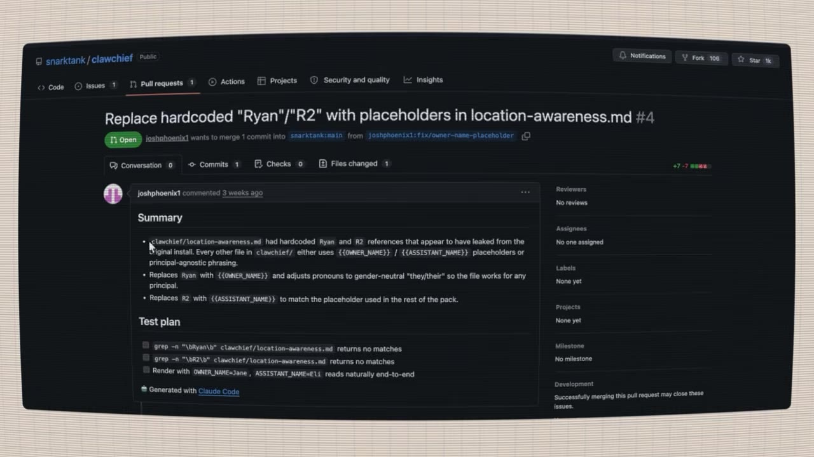
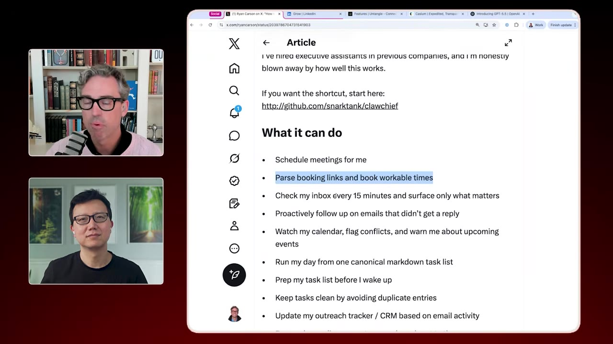
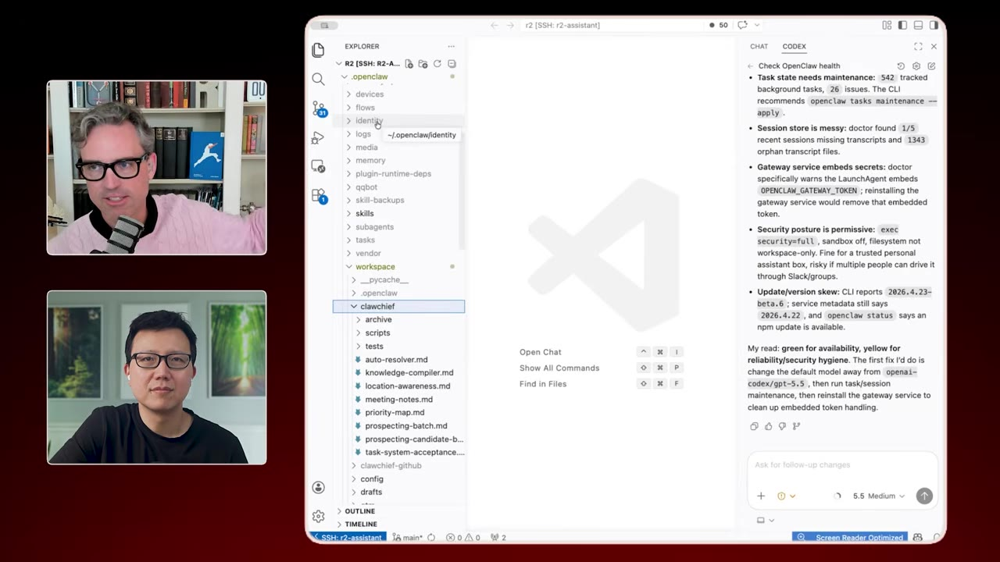
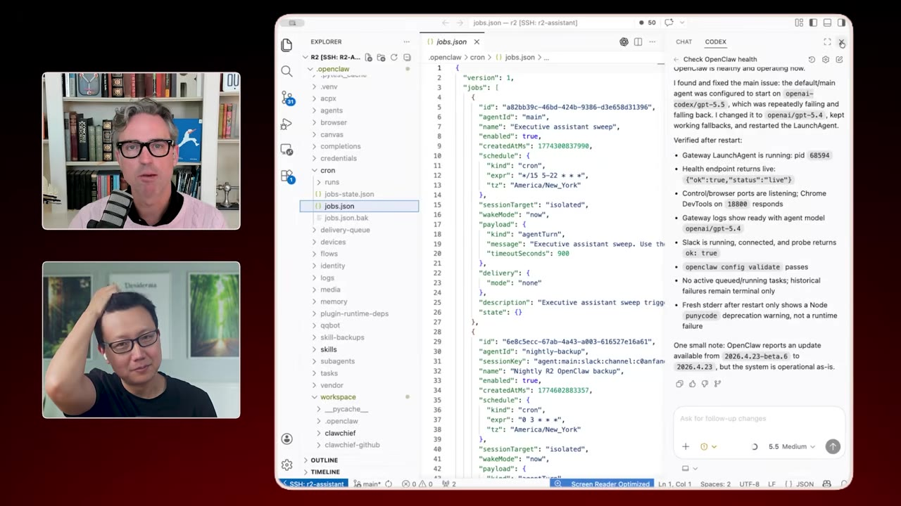
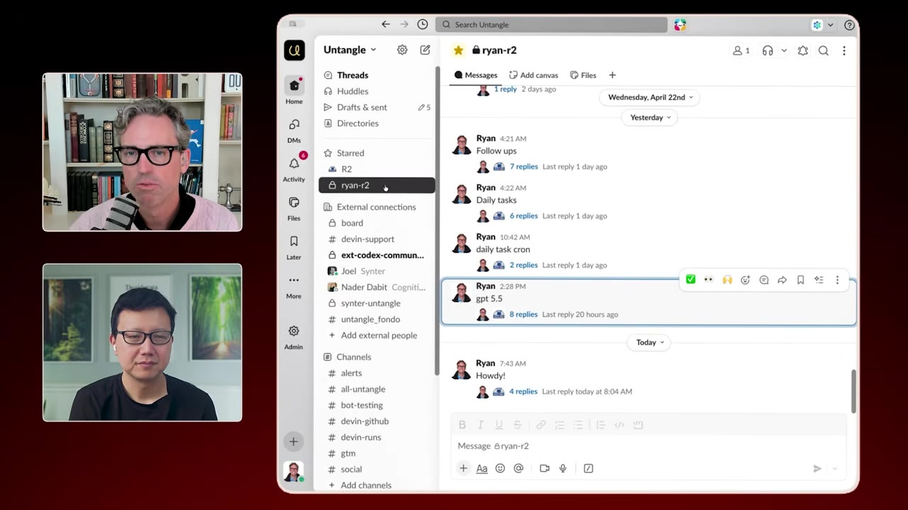
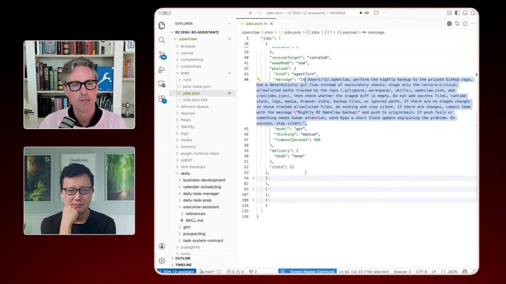
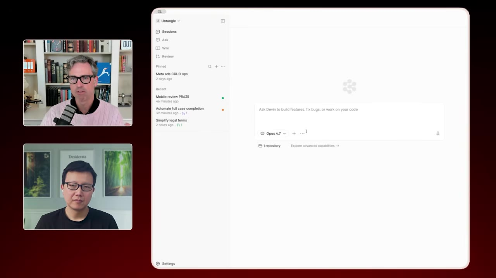
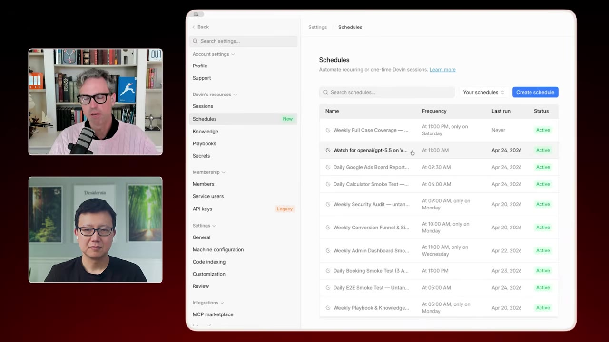

Solo Founder, 10x Output — How Ryan Carson Runs His Startup with AI Agents
Untangled founder Ryan Carson (formerly of Teachable) reveals how he replaced an entire team with OpenClaw agents, Devin cloud engineering, and automated playbooks — shipping 10+ PRs a day while running Google Ads, content marketing, and sales outreach.
Runtime: 39 minVideo published: May 24, 20266.7K views when summarized
Agents are cron jobs + markdown files — set up the system once, get perpetual leverage
OpenClaw runs as a 24/7 executive assistant: inbox sweeps, calendar booking, and cold outreach on a 15-minute cron
Ryan ships 10–20 PRs daily using Devin's cloud engineering with playbooks for review and merge
Content and ads are automated: video → Gemini description → Image 2 cover art → Publer publishing
The startup motto flipped: instead of skipping docs for MVP speed, you now invest in systems first to unlock the work of 10 people
01 · The setup cost flipped upside down
The new startup thesis
The old startup advice was "do the bare minimum to ship your MVP." Ryan's experience with Untangled inverted that — the biggest leverage now comes from investing heavily in systems, documentation, and processes before you hire.

Ryan's GitHub PR: "Replace hardcoded 'Ryan'/'R2' with placeholders" — his agent infrastructure is already open-sourced and version-controlled.00:00:06
Key insightStartup founders used to skip systems for speed. Now you invest in systems first, then get unlocked to do the work of 10 people.
02 · ClawChief: OpenClaw as chief of staff
An AI executive assistant
Ryan built a system called ClawChief — a set of markdown files that turns OpenClaw (his agent named "R2") into an executive assistant and chief of staff.

The ClawChief article: "How to turn your OpenClaw into the world's best assistant."00:01:43
It handles:
Scheduling meetings and parsing Calendly links
Inbox sweeps every 15 minutes across email and calendar
Proactive email follow-ups for unanswered messages
Business development outreach — research, spreadsheet updates, and cold emails sent as Ryan
Watching for agenda and conflict conflicts
The core data structure is a priority map — long-term quarterly priorities plus the people in Ryan's life that matter (family, friends, key business contacts). This gives R2 the context to make good decisions autonomously.
I'm probably shipping at least 10 PRs a day, sometimes a lot more. It's almost easier to onboard and train agents than to train humans. It's a million times easier.— Ryan Carson
03 · The configuration workflow
SSH into your agent
Ryan manages his entire OpenClaw setup from a MacBook Pro sitting in his closet, accessed via SSH through Tailscale. His toolkit:

Ryan and Peter working in VS Code — Ryan SSH'd into his MacBook where R2 lives.00:03:37
VS Code — primary editor for ClawChief config files
Codex (ChatGPT Pro) — for configuring R2 via natural language; he lets Codex inspect OpenClaw's own source code to update itself safely
Claude Code — for coding tasks
Devin — for cloud-based engineering (covered below)
Pro tip: Let your agent inspect its own source code when updating it. That way it can figure out why something broke and fix it — even when you're in Japan.
04 · Crons over heartbeats
Deterministic beats hope
The most important operational detail Ryan discovered: heartbeats are unreliable. OpenClaw's heartbeat triggers when the agent "feels like it" — not on a schedule. Crons are deterministic and repeatable.

The executive-assistant-sweep cron: runs every 15 minutes using the existing executive-assistant skill.00:08:24
His main cron runs the executive-assistant sweep every 15 minutes. The cron message is minimal ("use this skill") to avoid duplication with the skill file itself — follow your DRY principle even in agent configs.
05 · Slack as the communication layer
Threads matter
Ryan chose Slack over Telegram for a serious reason: threading makes it possible to organize conversations with an agent at scale.

The "Ryan R2" Slack channel with threaded conversations — Ryan even invited his sisters to try prompt-injecting his agent.00:10:52
He treats R2 like a real human employee:
R2 has his own email address (ryancarson.com — 25 years old, excellent deliverability)
R2 has his own GitHub account with real permissions
Calendar invite from R2, with Ryan as attendee — just like a real assistant would do
Read access to email, write access to calendar
06 · The hiring question
Agents first, people after
Ryan raised a $2M seed round but isn't hiring yet. His philosophy: feel the pain of every job before you hire to fill it, so you know exactly what to automate and what to hire for.
The inverted startup mottoBefore: "Skip systems, ship fast." → After: "Build systems first, ship 10x faster."
Agents retain their training forever. Humans walk out the door with it. Onboarding an agent is "hundreds of times easier and faster" than onboarding a person. Ryan plans to hire "agent-augmented people" once he's proved the workflow works.
In startups we used to say just do the bare minimum to get the MVP out. Do not spend time on systems or processes or documentation. That's literally reverse now.— Ryan Carson
07 · Automated prospecting
Every night, new meetings
One of Ryan's most powerful automations: a daily cron that researches and outreach to prospects automatically.

The prospecting skill: researches contacts via LinkedIn and Firecrawl, adds them to a Google Sheet CRM, drafts and sends emails as Ryan.00:16:57
The flow:
Firecrawl searches for verified prospects (e.g., family law attorneys)
Adds them to a Google Sheets CRM
Drafts personalized cold emails and sends them from ryancarson.com
Checks the sheet to avoid duplicates
Result: 10–20 meetings booked in a couple of weeks from cold outreach Ryan never personally wrote.
Anti-pattern caughtR2 was replying to email threads by creating fresh emails instead of true replies. The bug? A markdown instruction said "copy in my other account" — which made every reply look like a new thread. Always be overly specific in your agent instructions.
08 · Paper priorities
Analog in a digital world
In a surprising twist, Ryan switched his weekly priority tracking to paper.
Ryan holding up his weekly priority list on paper — the one place he keeps things analog.00:22:07
Digital task systems made it hard to see the week at a glance. A paper list (inspired by his wife's system) gives him weekly visibility — not daily, not quarterly, but this week. Peter counters with a whiteboard limited to three tasks. The underlying principle is the same: constraint creates focus.
09 · Devin for engineering
Cloud-first, zero local
For all coding, Ryan uses Devin — a fully cloud-based AI engineer. No local development, no dependency conflicts, no "works on my machine."

Devin's cloud interface: setting up a perfectly configured production VM. The agent writes, tests, and self-reviews code in the browser.00:24:57
The key unlock: Devin spins up a real production VM, and its browser-based testing creates a tight feedback loop. The agent can:
Use its own cloud browser to test features deterministically
Record screencasts of its own work
Notice and fix problems in its own PRs
Build its own CLIs (like a Google Ads API client)
"Most serious people are going to move to just use cloud engineering. I don't think it makes sense to code on your local machine very often, if ever."
10 · Playbooks and schedules
The code factory
Devin runs automations on schedules, driven by playbooks — step-by-step instructions that teach the agent how to perform any workflow.

The Schedules tab: "Weekly Full Case Coverage" runs the entire user experience through the app automatically every week.00:26:39
Ryan's code factory workflow:
Brain-dump a feature idea via WhisperFlow into Devin
Ask Devin to help write a PRD (the skill is just "ask me clarifying questions")
Say "Build it" — Devin writes the code in its cloud environment
Devin tests via its browser, records a screencast, and self-reviews
A "Land PR" playbook handles review, resolve, and merge — without Ryan looking at code
Ship. Repeat. 10–20 PRs per day.
For solo founders, the real work shifted from building (now "almost trivial") to go-to-market and adoption.
11 · The content machine
Video to social, fully automated
Ryan's content workflow is a machine:
Interview an expert via Descript
Chop into 60-second segments → upload to Google Drive
Nightly cron in Devin: watch folder → Gemini writes description → OpenAI Image 2 creates cover art → Gemini writes copy → Publer publishes to all social platforms
For brand consistency, he paid a designer (Brett from Design Joy, ~$6K/month) to create the initial branding, then used those reference images with a design.md so OpenAI's image model can reproduce the brand perfectly.
You need the taste and experience of a very good designer to build out your brand, your layout, and some basic social images — but after that, you can use CloudCine plus OpenAI's new image model to get unlimited, perfectly branded imagery.— Ryan Carson
12 · The full loop
Systems do the work, you do the human stuff
The thread connecting everything: setup cost is the moat.
Ryan explaining the setup: pay for the initial brand, then automate everything else.00:36:33
Ryan's system covers the full founder stack:
Function
Tool
Executive assistant
OpenClaw + ClawChief
Email & calendar
Gmail + Google Calendar APIs
Task management
Todoist
Engineering
Devin (cloud VM + browser testing)
Code review
"Land PR" playbook
Sales outreach
Firecrawl + Google Sheets + Gmail
Marketing
Google Ads API + Image 2 + Publer
Priority tracking
Paper (weekly) + digital (quarterly)
Take the time to set up the system to do the work, because then you're understanding how the work happens, and you're refining it. And then you either bring on more agents to augment that, or you bring on a human augmented with agents to do that.— Ryan Carson
The big ideaCompanies bifurcate between product and marketing people. Now you have to do both. Building features is almost trivial — the real skill is which features unlock revenue, and how fast you can get them to market. Everybody is a founder now, even if you're not.